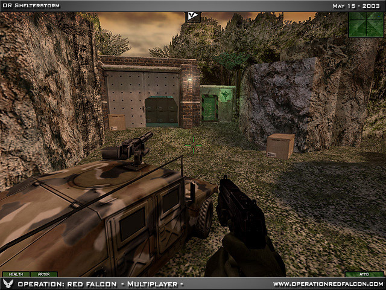
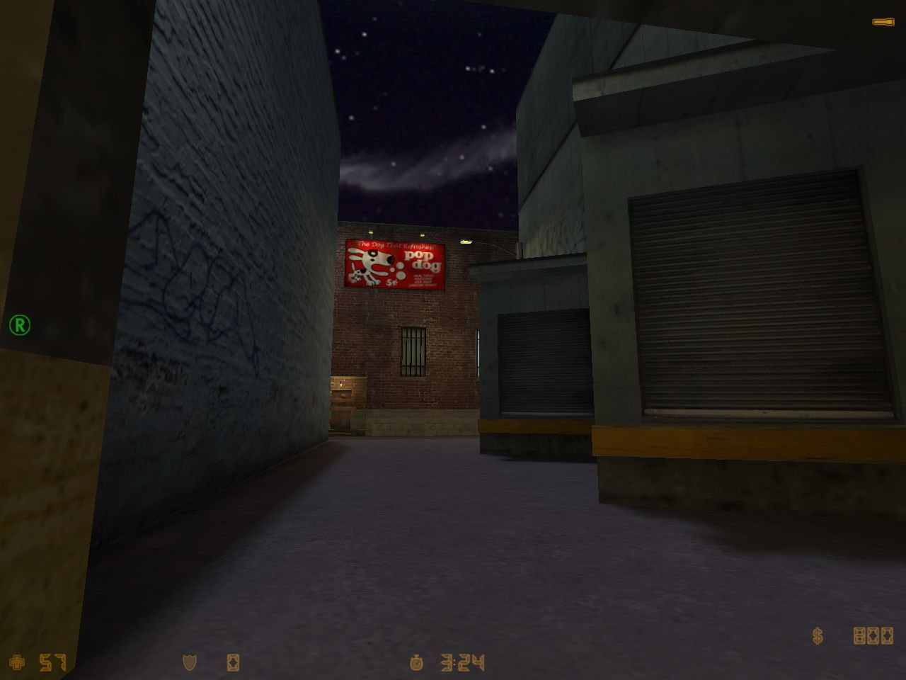
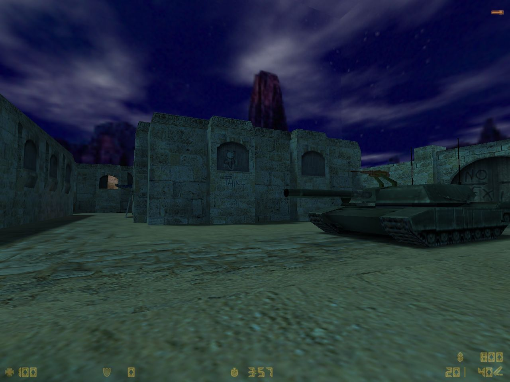
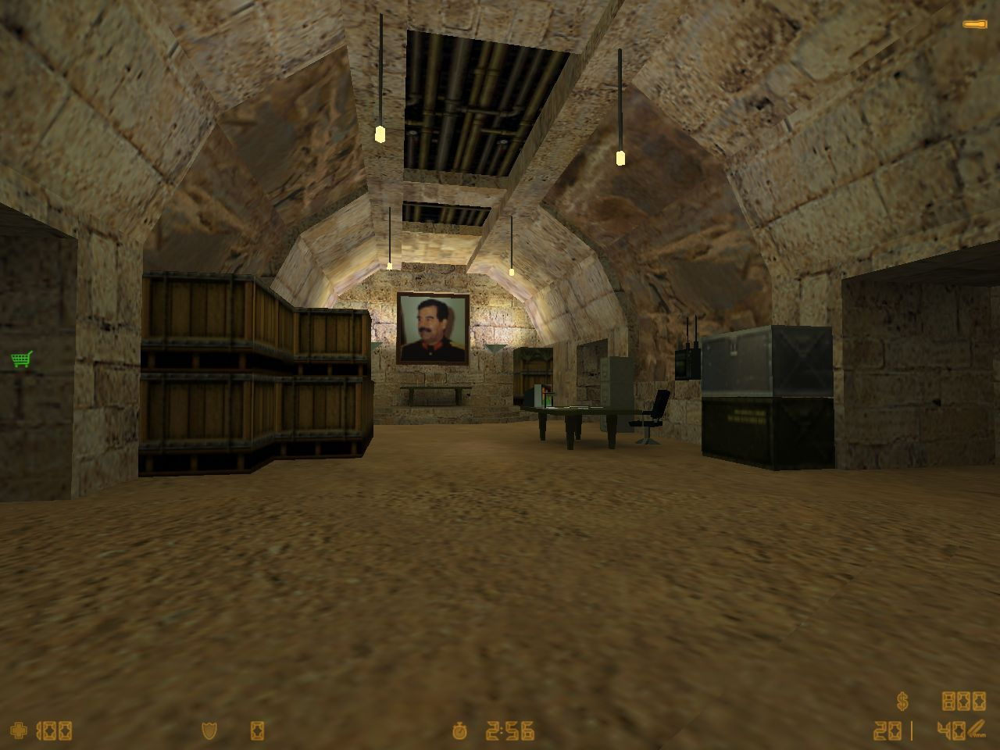
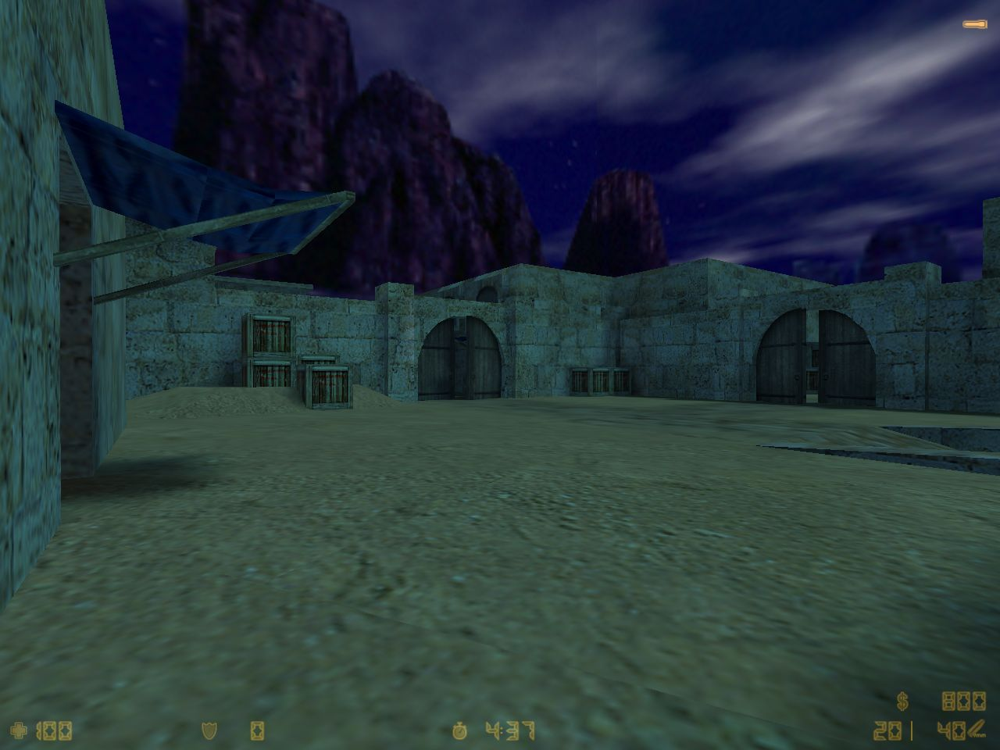
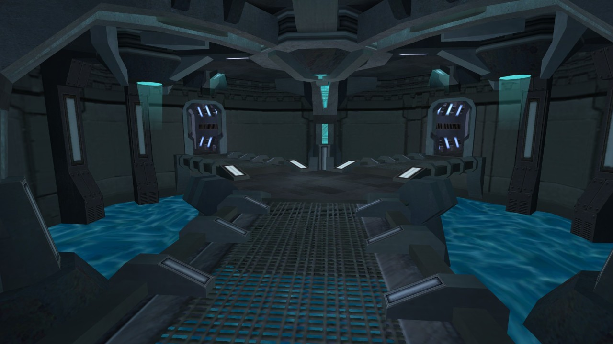
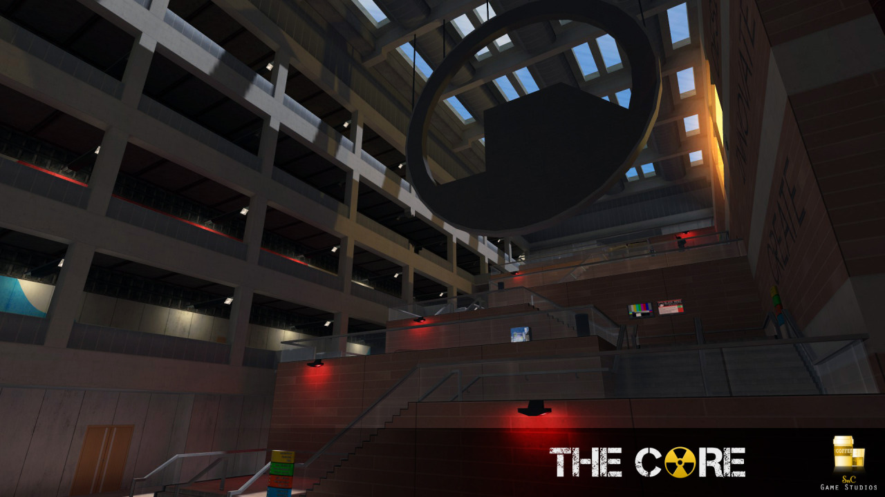
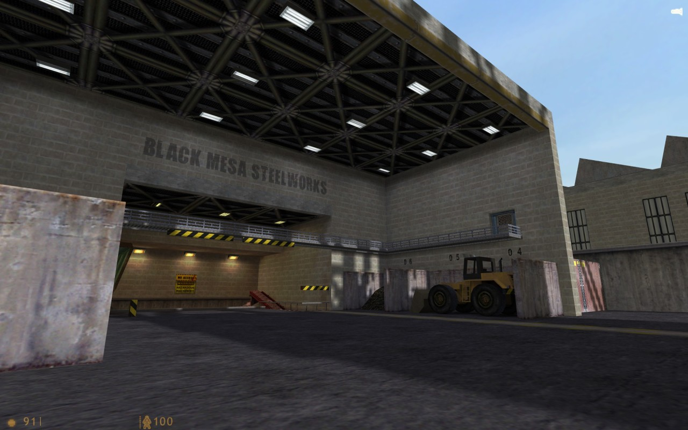
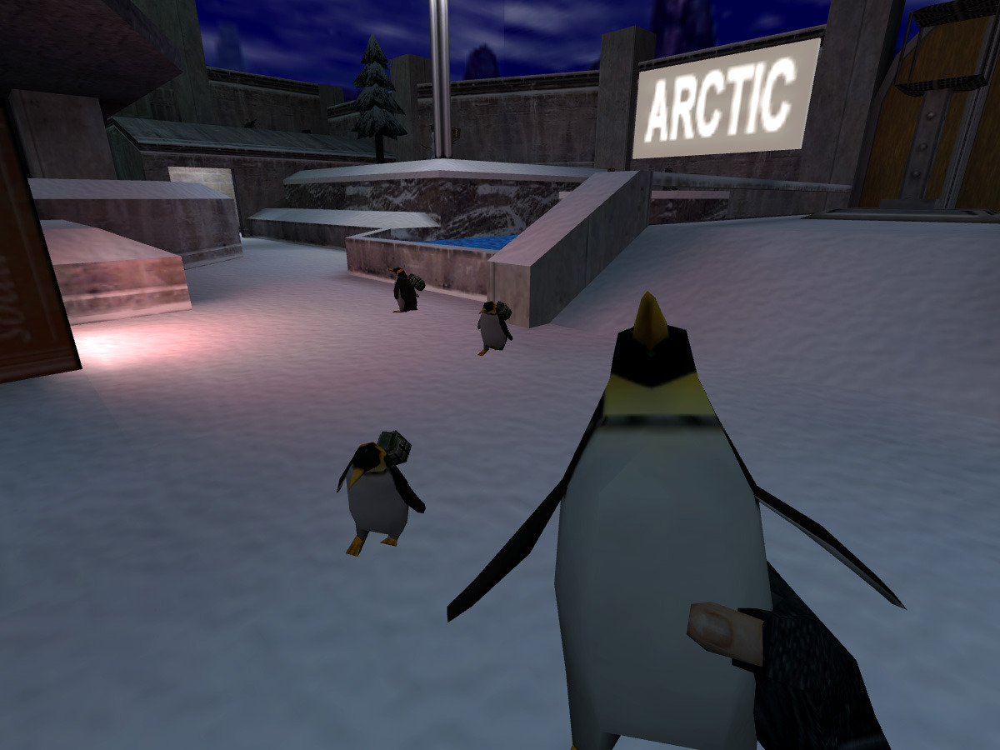

Afraid of Monsters: Director’s Cut by Andreas Rönnberg

de_lostworld for Counter-Strike by Benny Kayser
Afraid of Monsters: Director’s Cut by Andreas Rönnberg

Operation: Red Falcon (unreleased)
Fortress for Underworld: Bloodline by Black Widow Games
de_lostworld for Counter-Strike by Benny Kayser
Flagrun for Team Fortress Classic by Valve

co_niveus for Natural Selection by Craig Bryson

SCRAM Half-Life (upcoming) by Unquenque based on a map originally by Robert Yang
SCRAM Half-Life (upcoming) by Unquenque

de_train for Counter-Strike by Christopher Mair
Counter-Strike Beta 5, released 16 years ago - December 23, 1999

cs_backalley for Counter-Strike by Jamie Mactaggart
Counter-Strike Beta 5, released 16 years ago - December 23, 1999

cs_backalley for Counter-Strike by Jamie Mactaggart
Counter-Strike Beta 5, released 16 years ago - December 23, 1999

cs_iraq for Counter-Strike by David Marsh and Cameron Wu
Counter-Strike Beta 5, released 16 years ago - December 23, 1999

cs_iraq for Counter-Strike by David Marsh and Cameron Wu
Counter-Strike Beta 5, released 16 years ago - December 23, 1999

de_train for Counter-Strike by Christopher Mair
Counter-Strike Beta 5, released 16 years ago - December 23, 1999
cs_iraq for Counter-Strike by David Marsh and Cameron Wu
Counter-Strike Beta 5, released 16 years ago - December 23, 1999

cs_backalley for Counter-Strike by Jamie Mactaggart
Counter-Strike Beta 5, released 16 years ago - December 23, 1999

cs_iraq for Counter-Strike by David Marsh and Cameron Wu
Counter-Strike Beta 5, released 16 years ago - December 23, 1999
de_train for Counter-Strike by Christopher Mair
Counter-Strike Beta 5, released 16 years ago - December 23, 1999

cs_backalley for Counter-Strike by Jamie Mactaggart
Counter-Strike Beta 5, released 16 years ago - December 23, 1999

de_train for Counter-Strike by Christopher Mair
Counter-Strike Beta 5, released 16 years ago - December 23, 1999
Kicking off a couple days showing off the “new” maps in CS Beta 5.0!

Morpheus by Jason Erskine, based on the original UT map by Dave Ewing.

Starlabs (unreleased) by Steven van de Graaf

O.U.T.C.A.S.T. (unreleased)

Poke646: Vendetta by Marc Schroeder

dm_altdel for Half-Life deathmatch by James Archibald

rats for Half-Life deathmatch by Chris Spain

Starwars Halflife by Edward Steele

Starwars Halflife by Edward Steele
Half-Life Uplink Extended by The Mighty Atom


Some of the earliest screenshots of Half-Life 1, found over on reddit
never forget Ivan the space biker…….

Big Lolly by Cayle George

only 90s kids will remember this. also people of any age who played the pre-steam release of half-life

dm6 for Deathmatch Classic by Valve
zm_ko_catacombs for Counter-Strike by Kachito

Badlands for Team Fortress Classic by Valve

dm_absurdum for Half-Life Deathmatch by jaguar

az_simply_dark_crazy for Ricochet by Lilou

Black Mesa: Special Tactics Sector (upcoming) for Sven Co-op by Trempler

ns_veil for Natural Selection by Andrew Weldon
Mr. GoldSourceGold, how long do you think that section took to make from scratch?
An experienced mapper familiar with the textures could probably put this together in an hour, assuming a good vision of what the room will look like in the end. The lighting is great in Veil, allow a few hours more for tweaking the lighting in this shot.
Real answer: ask @mutton-basher :)
Funny thing is, for Veil I was so familiar with the texture lights I’d used for Eclipse, I didn’t actually need much time to iterate on lighting.
By itself, if I knew exactly what the room was going to be, yeah, it’s probably an hour-ish. But I recall this room taking a handful of revisions to get right. At one point it was a symmetric layout, but then as I broke up the symmetry the rooms on each side started to change and take on their personality. Some pushing and pulling of routes, that sort of thing, swapping out textures and trims, and I think the ceiling shapes took me a while to refine as well.
I should dig back through my old screenshot archive and see how well I could document the Veil dev process like I did Eclipse a couple years back…
Re: Veil - Yes, yes you should. :)
ns_veil for Natural Selection by Andrew Weldon
Mr. GoldSourceGold, how long do you think that section took to make from scratch?
An experienced mapper familiar with the textures could probably put this together in an hour, assuming a good vision of what the room will look like in the end. The lighting is great in Veil, allow a few hours more for tweaking the lighting in this shot.
Real answer: ask @mutton-basher :)
ns_veil for Natural Selection by Andrew Weldon

The Core (upcoming) by James Archibald and Andy Morris

Half-Life: Decay by Gearbox and the Decay PC Team
I’m about to continue streaming Decay with Phillip (@runthinkshootlive) at the top of the hour! http://multitwitch.tv/planetphillip/donakaunq

dod_falaise for Day of Defeat by Wes Shull

Hazardous Course 2 by Richman
Cry of Fear by Team Psykskallar



Combine Overwiki gets festive as this month’s featured article is…
The Penguin from Half-Life: Opposing Force’s Capture The Flag mode!
Learn more about these explosive little creatures by reading the full article.
Sancefar for Half-Life deathmatch by Rimrook
Arrangement (upcoming)
New trailer!